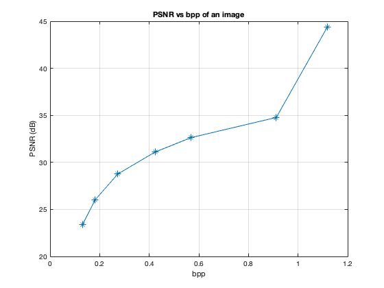
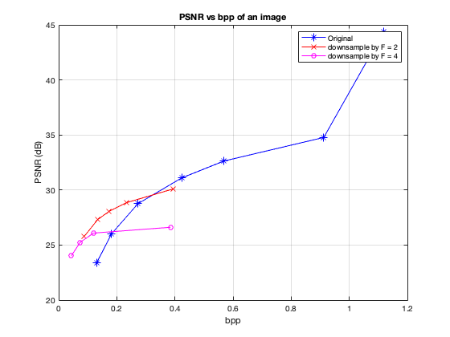

Contents
ECE 253 Homework 6
Shivani Bhakta A13832428
% __Part(a)__ clear, clc, close all; img = imread('totem-poles.tif'); [N,M] = size(img); numPixel = N * M; fprintf('Number of pixels in the image totem-poles.tif are %d. \n\n', numPixel) numBytes = dir('totem-poles.tif').bytes; fprintf('The image occupies %d bytes. \n\n', numBytes) fprintf('This means that the image occupies %d bits. \n\n', numBytes*8) fprintf('This means that the image occupies %d bits per pixel.\n\n', numBytes*8/numPixel) % __Part(b)__ % % imwrite(img,'totem50.jpg','Quality',50) % totem50 = imread('totem50.jpg'); % impsnr50 = psnr(img,totem50,255); % % [N,M] = size(totem50); % numPixel = N * M; % numBytes = dir('totem50.jpg').bytes; % bpp = numBytes*8/numPixel ; % % imwrite(img,'totem1.jpg','Quality',1) % totem1 = imread('totem1.jpg'); % impsnr1 = psnr(img,totem1,255); % % imwrite(img,'totem5.jpg','Quality',5) % totem5 = imread('totem5.jpg'); % impsnr5 = psnr(img,totem5,255); % % imwrite(img,'totem10.jpg','Quality',10) % totem10 = imread('totem10.jpg'); % impsnr10 = psnr(img,totem10,255); % % imwrite(img,'totem20.jpg','Quality',20) % totem20 = imread('totem20.jpg'); % impsnr20 = psnr(img,totem20,255); % % imwrite(img,'totem30.jpg','Quality',30) % totem30 = imread('totem50.jpg'); % impsnr30 = psnr(img,totem30,255); % % imwrite(img,'totem70.jpg','Quality',70) % totem70 = imread('totem70.jpg'); % impsnr70 = psnr(img,totem70,255); fprintf('Quality Factor bytes bpp PSNR \n\n'); itable = zeros(7,4); count = 1; for ii = [1, 5, 10, 20, 30, 50, 70] name = strcat('totem',int2str(ii), '.jpg'); imwrite(img,name,'Quality',ii); totem = imread(name); impsnr = psnr(img,totem,255); numBytes = dir(name).bytes; bpp = numBytes*8/numPixel; fprintf('%d %d %d %d \n \n', ii, numBytes, bpp, impsnr); itable(count,:) = [ii, numBytes, bpp, impsnr]; count = count + 1; end figure() plot(itable(:,end-1), itable(:,end), '-*'), grid on, xlabel('bpp'), ylabel('PSNR (dB)'), title('PSNR vs bpp of an image') fprintf('the PSNR doesnot increase linearly \n\n\n')
Number of pixels in the image totem-poles.tif are 480000. The image occupies 508688 bytes. This means that the image occupies 4069504 bits. This means that the image occupies 8.478133e+00 bits per pixel. Quality Factor bytes bpp PSNR 1 7829 1.304833e-01 2.337003e+01 5 10920 1.820000e-01 2.602298e+01 10 16377 2.729500e-01 2.875883e+01 20 25393 4.232167e-01 3.109611e+01 30 34108 5.684667e-01 3.263098e+01 50 54734 9.122333e-01 3.477501e+01 70 67046 1.117433e+00 4.435494e+01 the PSNR doesnot increase linearly
_Part(c)_
figure() plot( itable(:,end-1), itable(:,end), '-*b'), grid on, hold on; fprintf('First let us downsample by a factor of 2.......\n\n') totemhalf = imresize(img,0.5); fprintf('Quality Factor bytes bpp PSNR \n\n'); itable = zeros(5,4); count = 1; for ii = [10, 20, 30, 50, 80] name = strcat('totemS',int2str(ii), '.jpg'); imwrite(totemhalf,name,'Quality',ii) impsnr = psnr(img,imresize(imread(name),2),255); numBytes = dir(name).bytes; bpp = numBytes*8/numPixel; fprintf('%d %d %d %d \n \n', ii, numBytes, bpp, impsnr); itable(count,:) = [ii, numBytes, bpp, impsnr]; count = count + 1; end plot(itable(:,end-1), itable(:,end), '-xr'), hold on; fprintf('Now let us downsample by a factor of 4.......\n') totemquarter = imresize(img,0.25); fprintf('Quality Factor bytes bpp PSNR \n\n'); itable = zeros(4,4); count = 1; for ii = [20, 50, 80, 100] name = strcat('totemS',int2str(ii), '.jpg'); imwrite(totemquarter,name,'Quality',ii) impsnr = psnr(img,imresize(imread(name),4),255); numBytes = dir(name).bytes; bpp = numBytes*8/numPixel; fprintf('%d %d %d %d \n \n', ii, numBytes, bpp, impsnr); itable(count,:) = [ii, numBytes, bpp, impsnr]; count = count + 1; end plot(itable(:,end-1), itable(:,end), '-om'), grid on, hold on; xlabel('bpp'), ylabel('PSNR (dB)'), legend('Original', 'downsample by F = 2', 'downsample by F = 4'), title('PSNR vs bpp of an image')
First let us downsample by a factor of 2....... Quality Factor bytes bpp PSNR 10 5268 8.780000e-02 2.578643e+01 20 8072 1.345333e-01 2.731809e+01 30 10375 1.729167e-01 2.804841e+01 50 14043 2.340500e-01 2.885524e+01 80 23635 3.939167e-01 3.009695e+01 Now let us downsample by a factor of 4....... Quality Factor bytes bpp PSNR 20 2631 4.385000e-02 2.403437e+01 50 4439 7.398333e-02 2.524381e+01 80 7192 1.198667e-01 2.608656e+01 100 23069 3.844833e-01 2.661314e+01
_Part(d)_
fprintf('Let us look at the totem1 img'); figure() imshow("totem1.jpg")
Let us look at the totem1 img
As we can see from the image, the image is very blocky, and has a low PSNR of 23,37. This means that doing some filtering at the boundaries might help improve the image quality. We can use kindof a mean filtering here. Where we take the edges of the block and smoothed it out by replacing it with the mean of surrounding pixels.
totem1 = double(imread("totem1.jpg")); BW = double(edge(imread("totem1.jpg"))); filtered_img = imfilter(totem1+BW, [3,3]); figure() imshow(filtered_img)